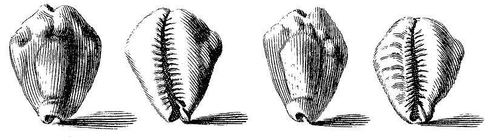

Contents · 27 slides
- Money
- Origin of Money
- Origin of Money
- Money Character of Goods
- Money Character of Goods
- Money Character of Goods
- Money Character of Goods
- Money Character of Goods
- Money Character of Goods
- Slide 10
- Slide 11
- Slide 12
- Slide 13
- Slide 14
- Slide 15
- Slide 16
- Slide 17
- Slide 18
- Slide 19
- Slide 20
- Slide 21
- Slide 22
- Slide 23
- Slide 24
- Slide 25
- Slide 26
- Slide 27
1 Money
2 Origin of Money
- Many goods are more readily trade-able than others:
- Livestock
- Salt
- Gems
- Grains
- Beads
- Shells

3 Origin of Money
- Eventually, one good becomes recognized as the most widely trade-able.

4 Money Character of Goods
- The good transports easily.
- If someone wants to trade using a commodity, it helps to be able to get the commodity to the trading site. Early instances of indirect exchange often employed livestock, especially cattle. That was money that not only talked but walked as well. Land is a poor medium of exchange because you can’t ever bring it anywhere.
5 Money Character of Goods
- The good is relatively scarce.
- This criterion is closely tied to the one above. If the good used as money is plentiful, you’ll tend to need a lot of it to make your purchases, making it hard to move around. For instance, if we used topsoil as money, we would all need a dump truck to go grocery shopping.
6 Money Character of Goods
- The good is relatively imperishable.
- You don’t want your money “going bad” a couple of hours or days after you get it. The longer you can hold your money, the more opportunity you have to wait for a good deal to come around. This is why items like milk, eggs, meat, and so on are not suitable as money. Live- stock can, of course, die, but you can check when you’re trading to ensure that you’re not being given money that’s on its last legs. The precious metals and gems clearly stand out in this regard.
7 Money Character of Goods
- The good is easy to store.
- Not only should your money last, you don’t want to have to go through a lot of rigmarole to get it to last. A chemical compound that is only stable below -300 degrees Fahrenheit will not come to be used as money. Carl Menger mentions that cattle were a popular medium of exchange among people in societies that were primarily agricultural and had plenty of open land nearby. The rise of cities made cattle much less useful as money. Most co-ops have strict rules against keeping livestock in an apartment, and the practice makes it very hard to keep the shag carpet clean. The precious metals and gems are again winners here.
8 Money Character of Goods
- The good is easily divisible.
- Not every exchange ratio will result in whole numbers of each good being exchanged. If your money is easily divisible, you can make change. Livestock clearly falls short in this regard, as once you divide it up, it’s not going to walk anywhere for you, and it becomes much more perishable. Gems are weak here also, given the difficulty in dividing them without destroying much of their value.
9 Money Character of Goods
- Each unit of the good is very similar to every other unit.
- You don’t want to keep fussing around checking out the quality of your money and adjusting the exchange ratio based on this quality. For one thing, someone else might judge this quality differently than you do. Diamonds, while in many ways suitable as money, are problematic in this regard—it takes an expert to judge the value of any particular diamond. The divisibility problem with diamonds is related to this. You can’t get the price of a whole diamond by adding up the prices of its pieces once it is cut.
10 Slide 10
- How the Fed Creates Money
11 Slide 11
- How the Fed Creates Money
- XYZ can now loan out all of the $10 million besides its required reserves
12 Slide 12
- Quantity of Federal Funds Borrowed and Lent
- Federal Funds Rate
- 6 %
- Supply of Federal Funds
- Demand for Federal Funds
- E
- The Fed “Setting” the Interest Rate
13 Slide 13
- Federal Funds Rate
- 6 %
- New Supply of Federal Funds
- Demand for Federal Funds
- E1
- E0
- 5 %
- Original Supply of Federal Funds
- Quantity of Federal Funds Borrowed and Lent
- The Fed “Setting” the Interest Rate
14 Slide 14
- Quantity of federal funds borrowed and lent
- Federal Funds Rate
- Demand for Federal Funds
- E1
- E0
- 5 %
- Supply of Federal Funds
- Target Rate
- A
- B
- The Fed “Setting” the Interest Rate
15 Slide 15
- Prime Rate
- Federal Funds Rate
- Interest Rate (%)
- 2000
- 2005
- 2004
- 2003
- 2002
- 2001
- 2007
- 2006
16 Slide 16
- Intended Investment (II )
- Interest rate (r )
- II
- r0
- II0
- II1
- r1
- How the Fed Affects the Keynesian Cross
17 Slide 17
- Intended Investment (II )
- Interest rate (r )
- II0
- II0
- II1
- r
- II1
- How the Fed Affects the Keynesian Cross
18 Slide 18
- 45
- Income
- Aggregate Demand and Output
- AD1 (with new, lower interest rate, r1)
- E1
- E0
- AD0 (with old interest rate, r0)
- Y1
- Y0
- How the Fed Affects the Keynesian Cross
19 Slide 19
- Expansionary monetary policy
- Lowers interest rates
- Investment is encouraged
- Aggregate demand rises
- Equilibrium GDP rises
- How the Fed Affects the Keynesian Cross
20 Slide 20
- Federal Funds Rate (%)
- 2000
- 2005
- 2004
- 2003
- 2002
- 2001
- 2007
- 2006
21 Slide 21
- Nonresidential Investment
- Residential Investment
- Private Fixed Investment (billions of 2000 dollars)
- 2000
- 2005
- 2004
- 2003
- 2002
- 2001
- 2007
- 2006
22 Slide 22
- Intended Investment (II)
- Interest rate (r )
- II0
- II1
- 5%
- II1
- 8%
- A
- B
- Original Target Rate
- New Target Rate
- II0
23 Slide 23
- Quantity of Bonds
- Price of Bonds (and interest rate)
- $ 100 (i = 5%)
- Supply of Bonds
- Demand for Bonds
- E
24 Slide 24
- Quantity of Bonds
- Price of Bonds (and interest rate)
- $ 100 (i = 5%)
- Supply of Bonds
- Original Demand for Bonds
- E0
- E1
- $103 (i = 2%)
- New Demand for Bonds
25 Slide 25
- 3 month T-bill
- Federal Funds Rate
- Interest Rate (%)
- 2000
- 2005
- 2004
- 2003
- 2002
- 2001
- 2007
- 2006
26 Slide 26
- Quantity of Money
- Interest Rate (i )
- i0
- Money Supply
- Money Demand
- E0
- E1
- i1
27 Slide 27
- Interest Rate (%)
- 2000
- 2005
- 1995
- Federal Funds Rate
- Nominal 30-Year Mortgage Rate
- Real 30-Year Mortgage Rate